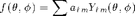
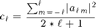
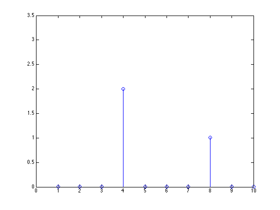

alm2spec
Evaluate angular power spectral density
Contents
Syntax
cL = alm2spec(alm) cL = alm2spec(alm, lMax)
Input Arguments
alm real valued coefficients lMax max order of harmonic to calculate (default 20)
Return Arguments
cL angular power spectrum
Description
The angular power spectrum of the function f,

are the coefficients

Example
Find power spectrum coefficients of dummy data set
nSide = 2^4;
nPix = nSide2nPix(nSide);
pix = 3*(ylm(nSide,4,2) + ylm(nSide,4,1)) + sqrt(17)*ylm(nSide,8,-4) ...
+ rand(1,nPix);
lMax = 10;
alm = pix2alm(pix,lMax);
cL = alm2spec(alm,lMax);
stem(0:lMax,cL);
 See also
pix2alm, alm2pix
Copyright 2010-2011 Lee Samuel Finn. Terms of Use.